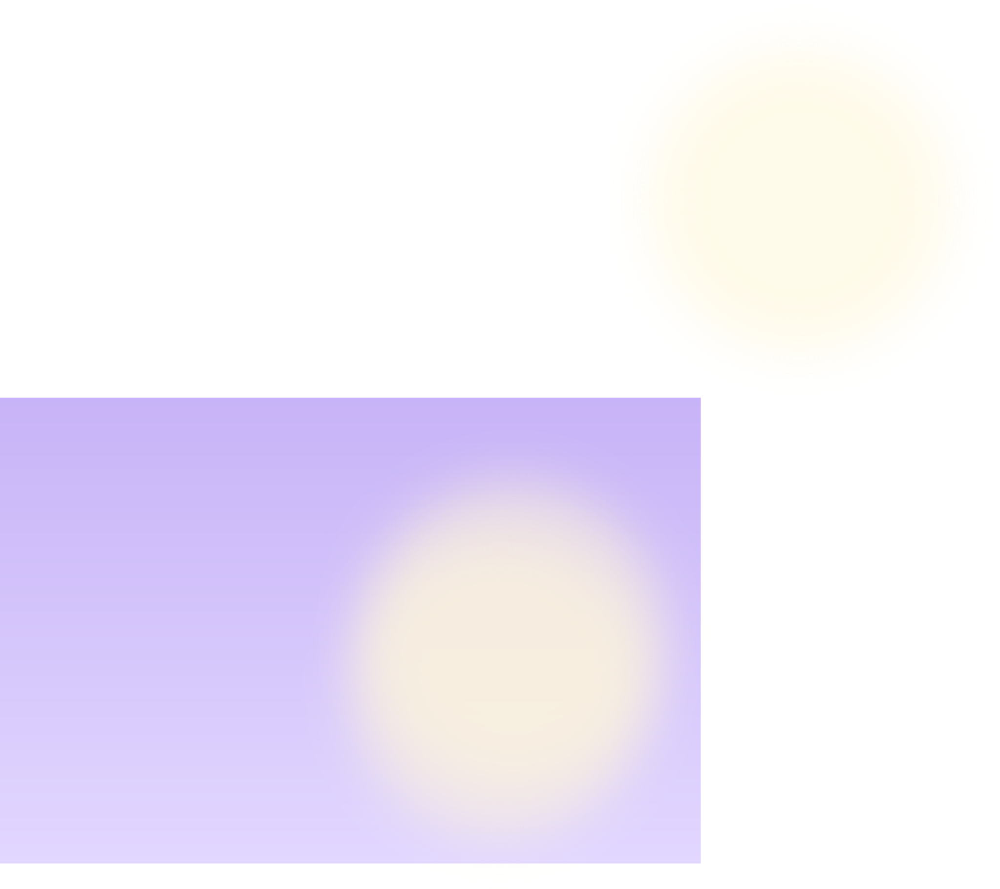
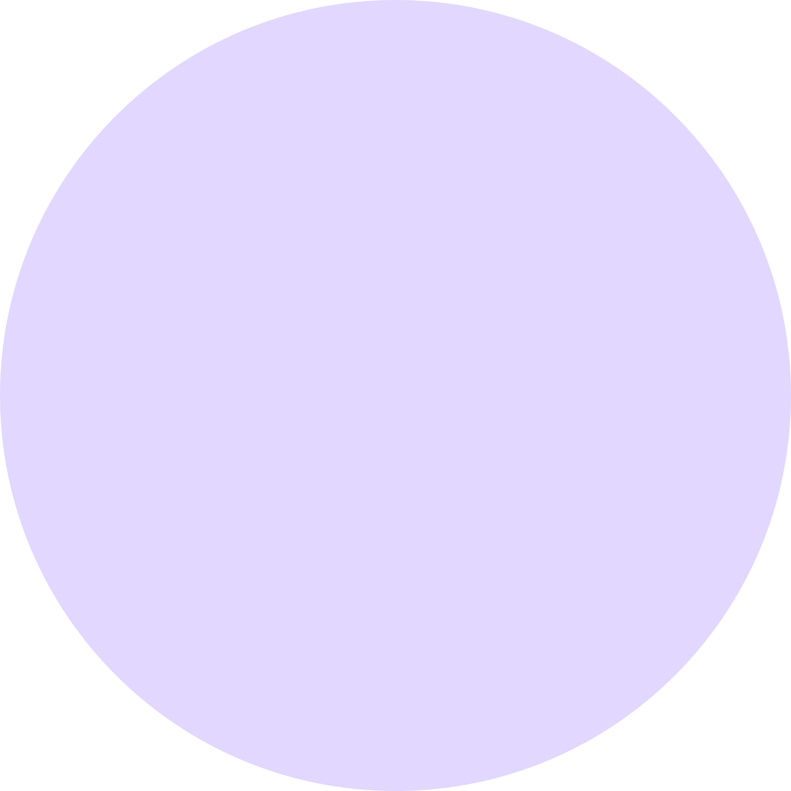
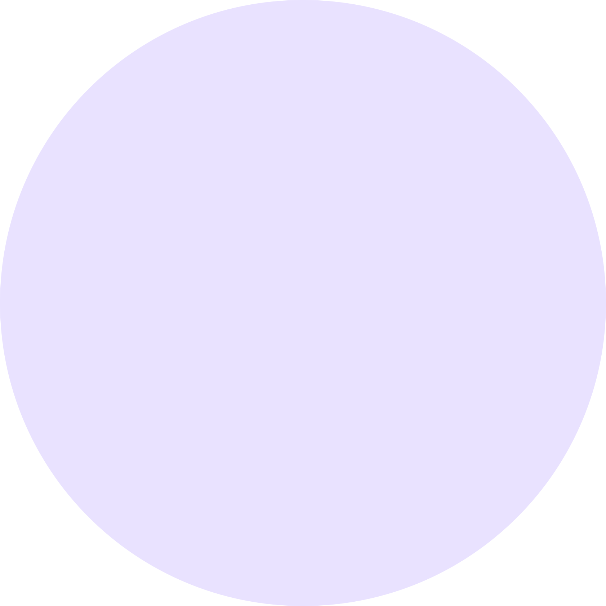
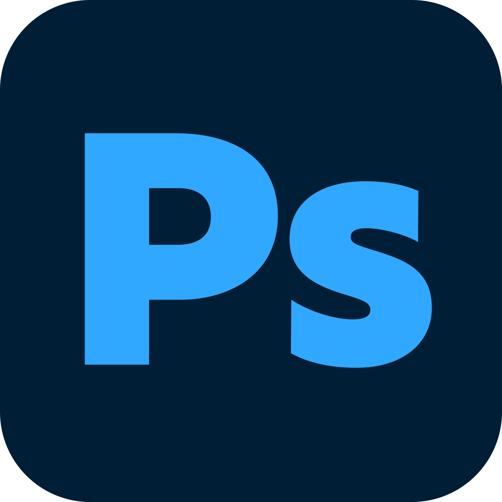
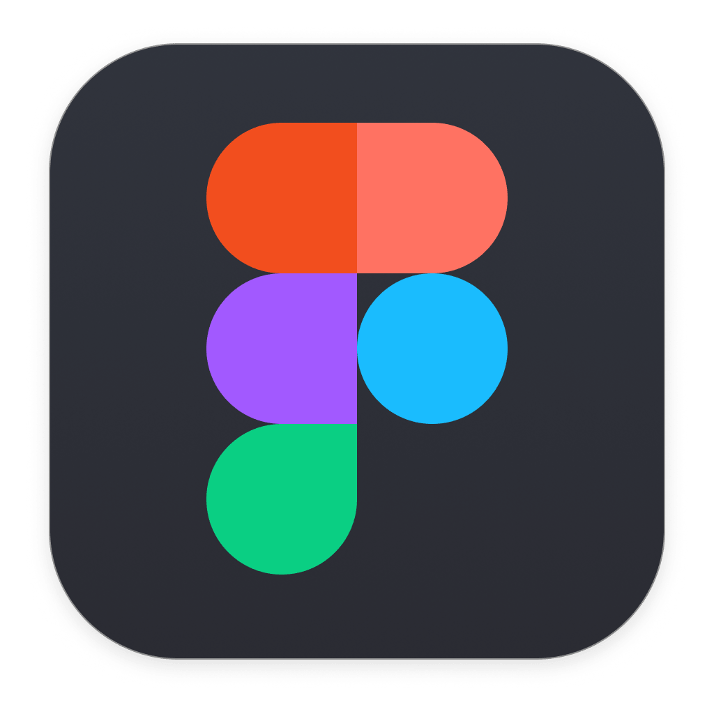
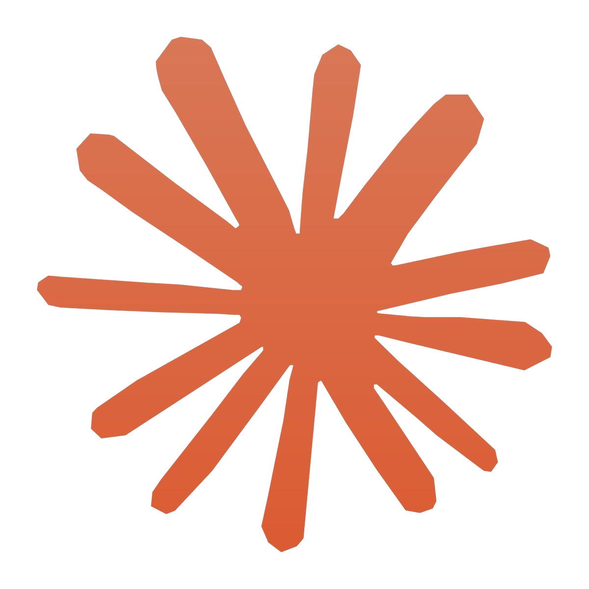
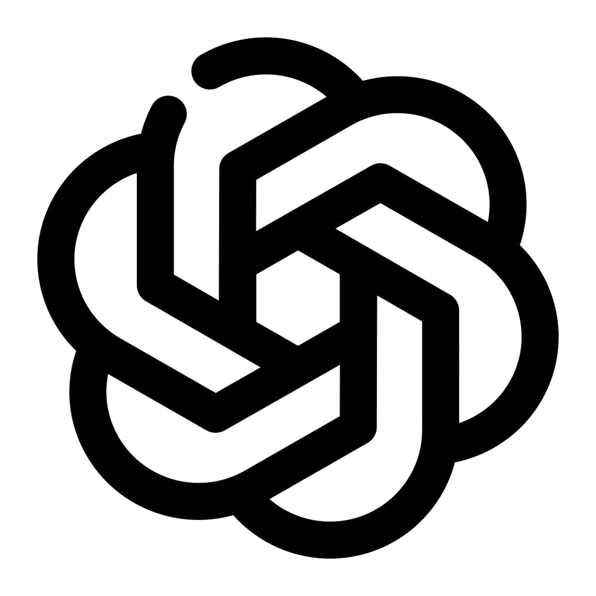
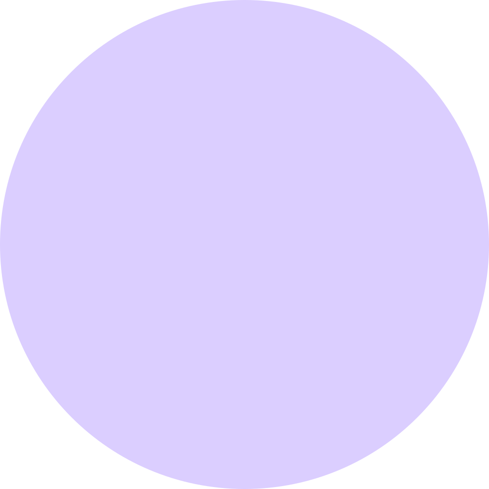

인적사항
- 이름
- 김지원
- 생년월일
- 2001.04.03
- 거주지
- 서울특별시 영등포구
- 이메일
- gjiwon566@gmail.com



INTRODUCE
저는 화면 위에서 벌어지는 움직임과 구조를 하나의 이야기로 봅니다. 컷이 바뀌는 순간, 버튼이 눌리는 순간 — 그 사이의 리듬을 설계하는 일에서 작업이 시작됩니다.
기획 단계에서는 전체 구조를 먼저 그리고, 제작 단계에서는 사소한 디테일까지 놓치지 않으려 합니다. 보는 사람이 자연스럽게 다음 장면을 기대하게 만드는 것, 그것이 제가 생각하는 좋은 결과물입니다.

BACKGROUND

SELECTED WORK
HOW I WORK
기획과 흐름을 먼저 그리고, 목적에 맞는 구조와 우선순위를
명확히 합니다
장면과 화면 사이의 리듬을 세심하게 조율하며, 디테일까지
완성도 있게 마무리합니다
의견을 듣고 조율하며, 의도를 명확히 전달하고
피드백을 빠르게 반영합니다
작업 과정을 기록하고, 새로운 도구와 흐름을 꾸준히 익혀
다음 작업에 반영합니다
TOOLS I USE
디자인부터 웹과 영상까지, 프로젝트에 맞는 도구를 사용합니다.
관련 지식
관련 지식
관련 지식
관련 지식

관련 지식
관련 지식

관련 지식
관련 지식



장면을 설계하고 화면을 움직이는 사람, 김지원입니다
함께 이야기 나누기